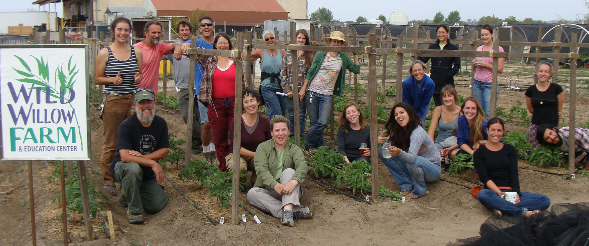
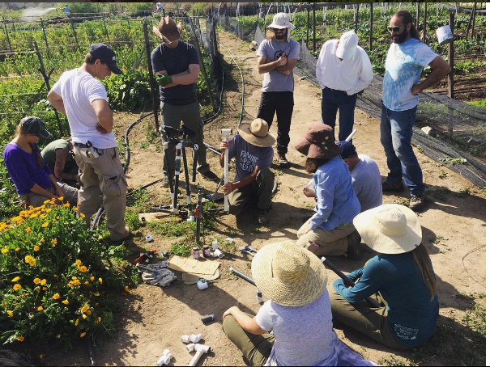

We Teach Sustainable Urban Farming.
Learn to grow better, healthier food where you live, and more of it, using the best practices for San Diego's unique conditions. What we teach is applicable to all forms of urban agriculture, whether you're an entreprenuer, a home vegetable and fruit grower, or have agricultural aspirations.
Tier 1: Farming Fundamentals
"I Do"
Participants start out on Tier 1. Curriculum includes two courses, field lessons and work-experience labs. Tier One begins with two courses: our six week Introduction to Small-Scale Farming (Farming 101), and the six week Growing Seasonal Crops (Farming 102). Students supplement the courses with weekday and weekend skills-workshops and work-experience field labs to reinforce lessons and further develop farming understanding, practices and skills.

Tier 1 students are actively learning and practicing farming skills while participating as vital members of the community that is Wild Willow Farm.
The Tier 1 Work-Experience Field Labs incorporate key lessons into our routine farm work. Work side-by-side with our farm coaches on field projects to refine your skills in our Fundamental Farm Skills Check-List.
Tier 2: Continuing Education
"We Do"
Tier 2 is a continuing and advancement of farming skills, or a deeper exploration of basic-level instructions offered at the Tier 1 level. The focus of Tier 2 is one-on-one mentorship with our farm staff in the field. Continuing Education classes are taught by Wild Willow instructional staff and by guest lecturers to broaden and deepen students' knowledge and understanding. Some coursework may take place at other sites, farms and orchards around San Diego County.
Intended Outcome: student gains confidence in farming skills and abilities.
Prerequisites for Tier 2:
Completion of Farming 101 and Farming 102
At least 40 hrs of field lab at the Tier 1 level
On a case by case basis, prospective students may substitute farm experience and/or equivalent farm education for Farming 101 and Farming 102.
All students must pass the bed building test before admittance into the Tier 2 program
Tier 3 The Business of Farming & Farm Incubation
"You Do"
The difference between farming and gardening is that farming is a business.
This Tier provides opportunities for beginning farmers to learn business skills and incubate their own small-farm goals in a supportive environment that provides the practical tools needed to make small-farming dreams a reality.
Business Classes: Tier 3 offers classes and courses in business management, farm planning, production planning, bookkeeping, regulatory compliance and more. Many Tier 3 classes are open to all students at any level and o tthe general public.
Upon completion of prerequisites, students may apply for Farm Incubation and be given the opportunity to incubate their own ideas before setting out on their own.